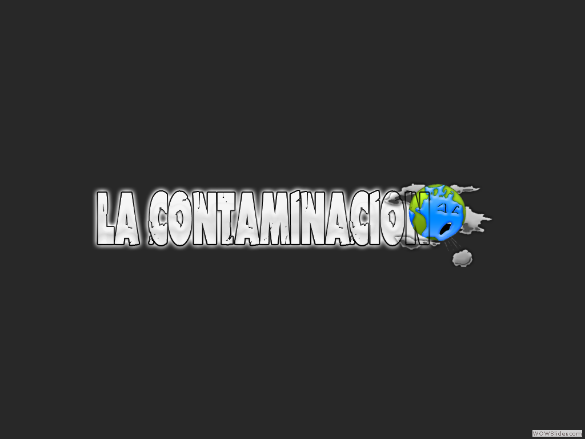
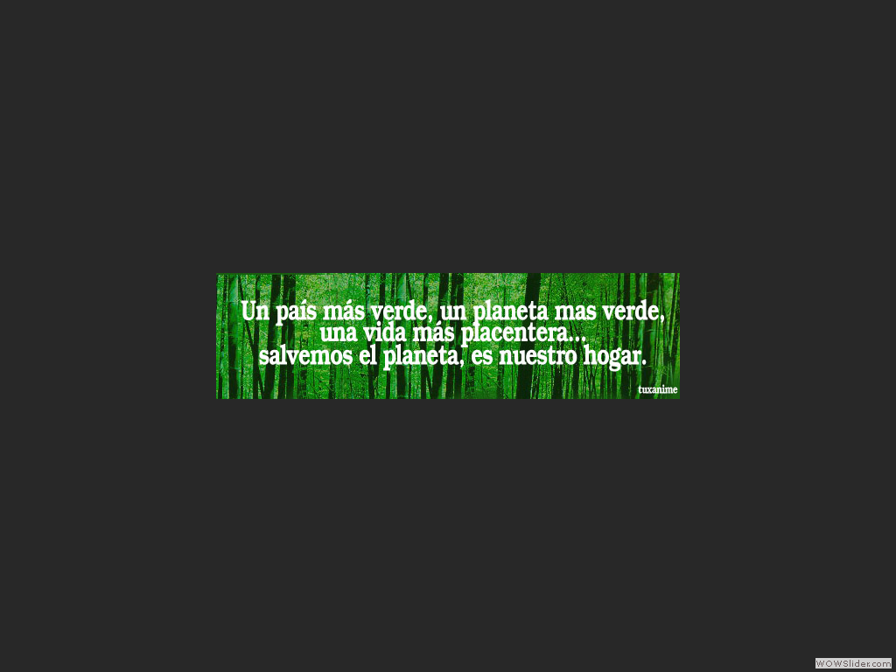
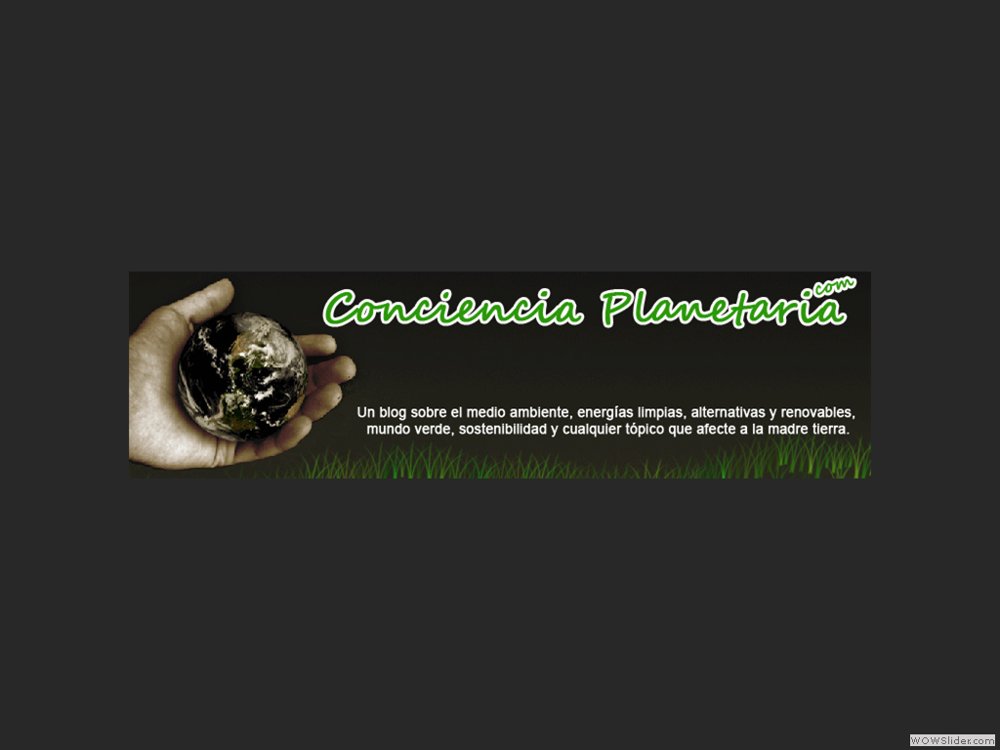

- Gran parte de la destrucción del hábitat y de la contaminación esta basada en el simple principio de que de alguna forma se nos ha dado licencia libre sobre otras especies para degradar el planeta.-Greg Graffin.
- Nuestro planeta se esta calentando debido a la contaminación de las actividades humanas. Y un calentamiento climático incrementa las probabilidades de clima extremo.-Gloria Reuben.
- La actividad humana es peor para la naturaleza que el mayor accidente nuclear de la historia.-Martin Cruz Smith.
- La contaminación nunca debería ser el precio de la prosperidad.-Al Gore.
- La contaminación ambiental es una enfermedad incurable. Solo puede ser prevenida.-Barry Commoner.
- Las personas que viven en lugares con altos niveles de contaminación tienen un 20% más de riesgo de contraer cáncer de pulmón.
 4
4